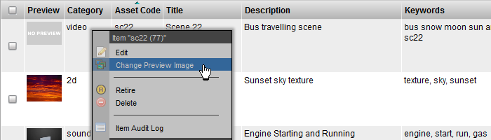
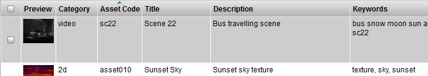
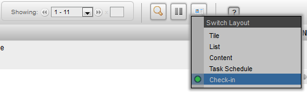

The simplest form of a check-in within TACTIC is to check-in a preview image for an item.
Locate an item you wish to check-in a preview for.
Note
If the preview column is not included in your view, you can add it through the Column Manager.
Right-Click on the item and in the context menu choose "Change Preview Image"

This will load a file browser where you can choose a preview image to check-in. Once the file has been uploaded, the preview thumbnail will automatically update.

To view where the files were placed, expand the History column.
Note
If the History column is not in the view, it can be added with the Column Manager, or the view can be changed to "Check-in" from the layout menu.

- Look for your "icon" check-in. This is the snapshot entry where you will see the check-in information (version, login, process, timestamp etc)
You can expand the "Files" column to see the location of the files in the central repository.

Check-ins or "Snapshots" in TACTIC represent files, directories, sequences etc that are checked in from a users computer to the servers central repository. This process is no different than if the user were to correctly name and place the files on the server individually but, TACTIC handles this automatically resulting in a clean, organized repository.
As a user there is also no need to worry about the versioning files as this is automated through the snapshot records. You simply choose which process the file is being checked into and TACTIC handles the rest.
When s file is checked in, an entry is created for that item which contain references to the process, version, date/time, who did it and where the file is on the server. If tasks exist for the item, check-ins often occur against those tasks which results in a direct relationship between the task and the check in providing a history of files for that particular process.
Naming Conventions
Naming conventions in TACTIC are used to automate the naming of the directories and files in the central repository. Although strictly controlled, it is important to note that these conventions are configurable and are simply used to guide where the files are stored. By default TACTIC is delivered with a set of naming conventions that often work well.
How naming conventions work is that a check in occurs, TACTIC is able to use information about the item being checked into, the task and the new version information to properly control where the files are copied to and what they are named in the repository. For example if checking into "design" for "character001" and the next version is 4, the resulting file structure might look like:
my_project/assets/character001/design/character001_design_004.jpg
Latest and Current
When files are checked in, it is often good to know which version is the latest version. Although at times, the highest version or last check in is not the version that should be delivered. "Current" is a way of flagging a check in as the deliverable check-in regardless of what the version number is. For example, you may have versions 1-10 for a "design" process but, version 7 is the approved deliverable check-in. Setting this check-in to "current" will flag it as the deliverable for either downstream pipeline processes or, for final delivery.
Versionless
By default, TACTIC simply created a new version within a process each time a check in occurs. Users can then checkout the desired version either by current/latest or by choosing a version. On top of this is the ability to generate a latest or current versionless files each time the current/or latest changes either during a check in or manually in the interface. This file is either a direct copy or a link depending on the setting in your project.
For more information on configuring version less check-ins, please review Project Automation → Naming Conventions in the TACTIC Setup Documentation.